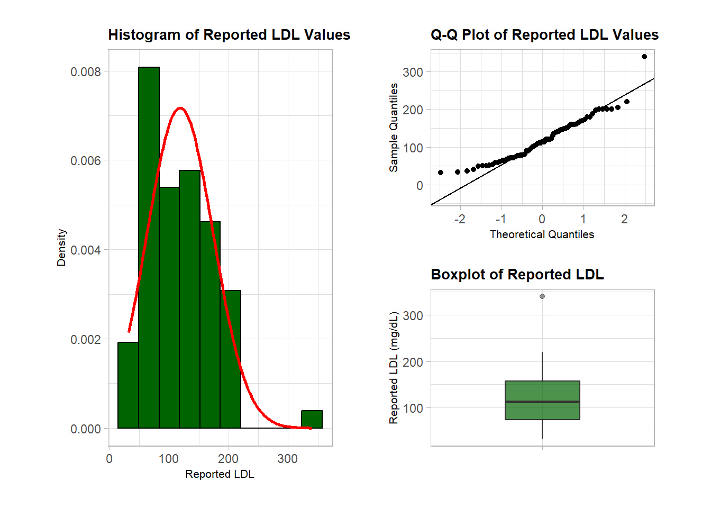
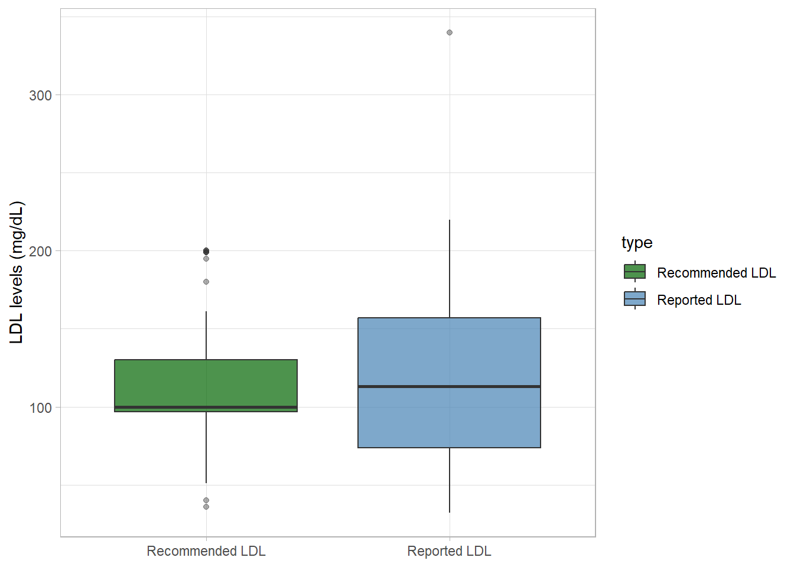
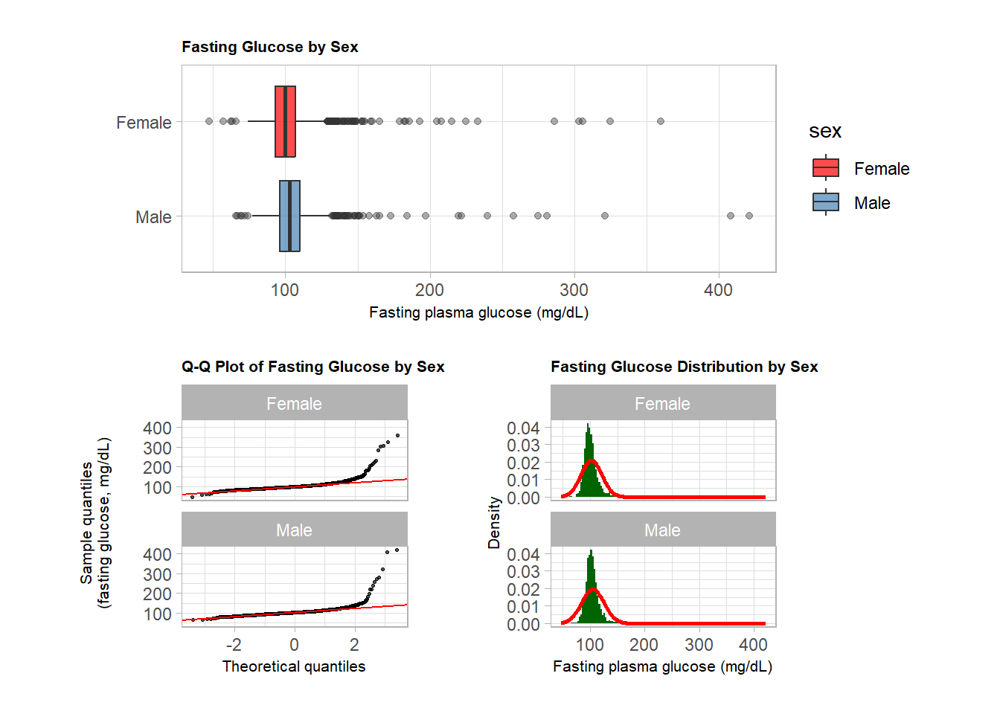

Study 1
Set Up & Data Import
library(nhanesA)
library(tidyverse)
#Here, I pull in P_DEMO data from nhanes and save it
demo<-nhanes("P_DEMO", translated = FALSE)|>tibble()
glu<-nhanes("P_GLU", translated = FALSE)|>tibble()
diq<-nhanes("P_DIQ", translated = FALSE)|>tibble()
alq<-nhanes("P_ALQ", translated = FALSE)|>tibble()
#Saving the RDS
saveRDS(demo, "data/P_DEMO.Rds")
saveRDS(glu, "data/P_GLU.Rds")
saveRDS(diq,"data/P_DIQ.Rds")
saveRDS(alq, "data/P_ALQ.Rds")
#reading data as tibble
demo<-readRDS("data/P_DEMO.Rds")
glu<-readRDS("data/P_GLU.Rds")
diq<-readRDS("data/P_DIQ.Rds")
alq<-readRDS("data/P_ALQ.Rds")Data Cleaning
For all analyses, I will take data from the demographic (P_DEMO), diabetes (P_DIQ), glucose levels (P_GLU), and alcohol consumption (P_ALQ) datasets. I first merge all four datasets into a single dataframe called all_raw. Then I filter the raw, merged dataframe to include only participants who have lab and questionnaire results and are adults between the ages of 21 and 79. This filtered, merged dataframe is named all_clean, with a total of 7,853 unique observations.
Analysis A
In this analysis, I want to look at the difference between reported and recommended LDL amongst diabetic subjects who take diabetic pills. Here, I use the dataset DIQ070 containing diabetic subjects and select subjects encoded by 1 (DIQ070==1), indicating they’re diabetic and currently taking diabetic pills. Then, I remove the reported and recommended LDL values from subjects who refused to answer, don’t know, or have missing values for whether they take diabetic pills using the mutate function. This gives me the diqA dataframe that includes the reported and recommended LDL values from diabetic subjects who take diabetic pills.
Analysis B
In this analysis, I want to compare the fasting glucose levels of non-diabetic subjects in males vs. females. To do this, I filtered out non-diabetic subjects from the DIQ010 dataset and selected only subjects with available fasting glucose levels from the LBXGLU dataset. Then, I divided this cohort into subgroups by sex.
Analysis C
In this analysis, I want to compare baseline fasting glucose levels between groups with varying alcohol consumption levels. The ALQ142 dataset classifies subjects into different groups based on how many days they have had 4 or 5 drinks in the past 12 months. I merged these groups together to create 4 broader sub-groups that signify the subjects’ drinking habits. The groups include: social drinker, intermediate, and heavy drinker, with social drinker having the fewest days with 4 or 5 drinks and heavy drinker having the most. For the “non-drinker” control group, I used subjects that responded “Never” in the ALQ121 dataset, which asks how often they drank alcoholic beverages in the past 12 months.
Below is the code where I filtered for only non-diabetic subjects and set the criteria for my four subgroups.
diqC <- all_clean |>
filter(DIQ010==2)|>
mutate(
alcohol_group = case_when(
ALQ121 == 0 ~ "Nondrinker",
ALQ142 %in% 7:10 ~ "Social drinker",
ALQ142 %in% 4:6 ~ "Intermediate",
ALQ142 %in% 1:3 ~ "Heavy drinker",
TRUE ~ NA_character_
),
alcohol_group = factor(alcohol_group,
levels = c("Nondrinker", "Social drinker", "Intermediate",
"Heavy drinker"))) |>
filter(!is.na(alcohol_group))
glu_C <- diqC |> filter(!is.na(LBXGLU))
glu_C |> count(alcohol_group) # A tibble: 4 × 2
alcohol_group n
<fct> <int>
1 Nondrinker 480
2 Social drinker 606
3 Intermediate 278
4 Heavy drinker 95Analysis D
In this analysis, my two categorical variables are sex (male or female) and retinopathy status (with or without) in diabetic subjects. To create the cohort groups, I first filter for only diabetic subjects from those who responded “Yes” in the DIQ010 dataset. For the sex variable, I use the mutate function to create the male and female subgroups based on their encoded response in the RIAGENDR dataset. The same method is used on the DIQ080 dataset to create the with- and without-retinopathy subgroups.
Male Female
Yes 115 114
No 517 429Codebook
| Variable | Description |
|---|---|
diabetics |
subjects with reported diabetes |
sex |
female or male |
nondrinker |
have not had alcohol in the past 12 months |
occasional_drinker |
have had 4 or 5 drinks/day once a month to 1-2 times in the past 12 months |
social_drinker |
have had 4 or 5 drinks/day 2 times a week to 2-3 times a month in the past 12 months |
heavy_drinker |
have had 4 or 5 drinks/day every day to 3-4 times a week in the past 12 months |
retinopathy |
Retinopathy status of diabetic subjects. Yes = have retinopathy; No = does not have retinopathy |
reported_ldl |
LDL level reported by subjects (mg/dL) |
goal_ldl |
LDL level recommended by doctor (mg/dL) |
Analysis A: Comparing 2 Means with Paired Samples
Among diabetics who take diabetic pills, is there a difference between their reported LDL cholesterol and the LDL goal their doctor recommended?
Research question
Diabetes patients are prescribed diabetic pills to control their blood sugar levels. This can potentially modulate other clinically relevant measurements such as total serum LDL, which is heightened in diabetes. Hence, it is interesting to examine whether, among diabetics who take diabetic pills, there is a difference between their reported LDL levels and the ideal LDL goal recommended by their doctor.
About the data
The comparison is being made between reported and recommended LDL levels (in mg/dL). As shown earlier, the data have been cleaned to include only diabetic subjects who are taking diabetic pills and have reported their most recent LDL levels. As it has been shown that LDL levels tend to rise with age, it is important that the relative age between all subjects for this analysis is evenly matched and is not skewed towards either direction.
Registered S3 method overwritten by 'mosaic':
method from
fortify.SpatialPolygonsDataFrame ggplot2knitr::kable(ageA)| min | Q1 | median | Q3 | IQR | max | mean | sd | n | missing | |
|---|---|---|---|---|---|---|---|---|---|---|
| 36 | 58.75 | 65.5 | 71.25 | 12.5 | 79 | 64.06579 | 10.14999 | 76 | 0 |
med_age <- median(diqA$RIDAGEYR)
ageA<-ggplot(diqA, aes(x = RIDAGEYR)) +
geom_histogram(binwidth = 5, fill = "darkgreen", color = "black", alpha = 0.8) +
geom_vline(xintercept = med_age, color = "red",linetype = "dashed", linewidth = 0.9) +
annotate("text", x = med_age, y = Inf,label = paste0("Median = ", med_age),color = "red", hjust = 1.1, vjust = 2.3, size = 4.5) +
labs(x = "Age (years)", y = "Count",title = "Age distribution of Subjects") +
theme_minimal() +
theme(
plot.title = element_text(size = 10, face = "bold"),
axis.title = element_text(size = 8),
axis.text = element_text(size = 8)
)
ageA
From the summary and histogram showing the age distribution of the subjects in this analysis, it is clear that the histogram is slightly left skewed with the median age of 65.5 years. This is important to keep in mind for interpreting the results as age is a known factor influencing LDL levels.
To assess normality of the reported LDL distribution, I have made the following plots:
qA<-ggplot(diqA, aes(x = reported_ldl)) +
geom_histogram(aes(y = after_stat(density)),bins = 10, fill = "darkgreen",color = "black") +
stat_function(fun = dnorm, args = list(
mean = mean(diqA$reported_ldl),
sd = sd(diqA$reported_ldl)),
color = "red",
linewidth = 1) +
labs(
title = "Histogram of Reported LDL Values",
x = "Reported LDL",
y = "Density")
qqA<-ggplot(diqA, aes(sample = reported_ldl)) +
stat_qq() +
stat_qq_line() +
labs(
title = "Q-Q Plot of Reported LDL Values",
x = "Theoretical Quantiles",
y = "Sample Quantiles")
bA<-ggplot(diqA, aes(x = "", y = reported_ldl)) +
geom_boxplot(fill = "darkgreen", alpha = 0.7, width = 0.4, outlier.alpha = 0.5) +
labs(x = NULL, y = "Reported LDL (mg/dL)",
title = "Boxplot of Reported LDL")
combinedA<-qA+(qqA/bA)&
theme(plot.title = element_text(size = 10, face="bold"),
axis.title = element_text(size=8),
plot.margin = margin(10, 20, 10, 20))
combinedA
The S-shaped curve from the q-q plot suggests a uniform distribution. However, based on the histogram and boxplot, the distribution of reported LDL values resembles a right-skewed distribution. The curve at the right end of the tail is likely due to extreme outliers illustrated by the histogram and boxplot. From these plots, we cannot assume normality of the reported LDL values.
Analysis
As shown in the data exploration part, the distribution of reported LDL values is right-skewed. Due to this, comparing the medians of the two paired samples (reported vs. recommended LDL) will be more appropriate, as the median is more resistant to outliers than the mean.
In addition, even though we cannot assume normality, the sample sizes for both populations are larger than 30. The paired t-test cannot compare medians, so the bootstrap method is more appropriate. I created the variable diqA_diff to generate the difference between the reported and recommended LDL values, then used the bootstrap method to compare the median difference.
diqA_diff <- diqA |> mutate(diff = reported_ldl - goal_ldl)
set.seed(431)
boot_med <- replicate(10000, median(sample(diqA_diff$diff, replace = TRUE)))
tibble(
`Observed median difference` = median(diqA_diff$diff),
`Lower 90% CI` = quantile(boot_med, 0.05),
`Upper 90% CI` = quantile(boot_med, 0.95)) |>
knitr::kable(digits = 2)| Observed median difference | Lower 90% CI | Upper 90% CI |
|---|---|---|
| 2.5 | 0 | 10 |
bA<-diqA |>
pivot_longer(c(reported_ldl, goal_ldl), names_to = "type", values_to = "ldl") |>
mutate(type = recode(type, reported_ldl = "Reported LDL", goal_ldl = "Recommended LDL")) |>
ggplot(aes(x = type, y = ldl, fill = type)) +
geom_boxplot(alpha = 0.7, outlier.alpha = 0.4) +
scale_fill_manual(values = c("Reported LDL" = "steelblue", "Recommended LDL" = "darkgreen")) +
labs(x = NULL, y = "LDL levels (mg/dL)")
bA
Conclusion
From the resulting table, the interval includes 0. Therefore, at 90% confidence level, there is no difference in the median between reported and recommended LDL. In the context of the central question, this means that the diabetic pill does have a positive effect in helping diabetic patients manage LDL levels, which is one of the main clinical outcomes in diabetes.
Analysis B: Comparing 2 Means with Independent Samples
Do men have higher baseline fasting plasma glucose levels than women?
Research question
It has been shown that diabetes is more prevalent in the male than female population in the US. Fasting plasma glucose levels are one of the prominent clinical measurements to infer an individual’s risk of having diabetes. Hence, it is interesting to examine whether there is an intrinsic sex difference in fasting plasma glucose levels. In this analysis, I want to examine whether men have higher baseline fasting plasma glucose levels than women?
About the data
In this analysis, I’m comparing fasting plasma glucose levels between non-diabetic men and women. As age has not been shown to influence fasting glucose levels, the age distribution between the subjects of this analysis is not a concern.
To assess normality of the distributions, I made the following plots:
group_stats <- diqB |>
group_by(sex) |>
summarise(mean_glu = mean(LBXGLU, na.rm = TRUE),
sd_glu = sd(LBXGLU, na.rm = TRUE),
.groups = "drop")
glu_range <- range(diqB$LBXGLU, na.rm = TRUE)
norm_curves <- group_stats |>
rowwise() |>
reframe(
sex = sex,
glucose = seq(glu_range[1], glu_range[2], length.out = 200),
density = dnorm(glucose, mean = mean_glu, sd = sd_glu))
qB <- ggplot(diqB, aes(x = LBXGLU)) +
geom_histogram(aes(y = after_stat(density)), binwidth = 3,
fill = "darkgreen", color = NA) +
geom_line(data = norm_curves, aes(x = glucose, y = density),
color = "red", linewidth = 1) +
facet_wrap(~ sex, ncol = 1) +
labs(x = "Fasting plasma glucose (mg/dL)", y = "Density",
title = "Fasting Glucose Distribution by Sex") +
coord_cartesian(xlim = c(46, 422))
qqB <- ggplot(diqB, aes(sample = LBXGLU)) +
stat_qq(size=0.6, alpha=0.7) + stat_qq_line(color = "red") +
facet_wrap(~ sex, ncol = 1) +
labs(x = "Theoretical quantiles",
y = "Sample quantiles\n(fasting glucose, mg/dL)",
title = "Q-Q Plot of Fasting Glucose by Sex")
bB<-ggplot(diqB, aes(x = sex, y = LBXGLU, fill = sex)) +
geom_boxplot(alpha = 0.7, outlier.alpha = 0.4) +
scale_fill_manual(values = c("Male" = "steelblue", "Female" = "red")) +
scale_x_discrete(limits = c("Male", "Female")) +
labs(x = NULL, y = "Fasting plasma glucose (mg/dL)",
title = "Fasting Glucose by Sex")+
coord_flip()
combinedB<-bB/(qqB+qB)
combinedB &
theme(
plot.title = element_text(size=8, face="bold"),
axis.title=element_text(size=8),
plot.margin = margin(10, 20, 10, 20))
As clearly shown by the boxplot and q-q plot, both distributions are strongly right-skewed. This can be due to undiagnosed diabetics who are not reported in the questionnaire. Due to this, we cannot assume normality for either distribution.
Analysis
As shown in the data exploration part, we cannot assume normality. However, since the sample sizes for both populations are larger than 30, we can still perform the t-test to compare the means of the two independent samples.
diqB_test <- t.test(LBXGLU ~ sex, data = diqB, conf.level = conf_level)
diqB_test
Welch Two Sample t-test
data: LBXGLU by sex
t = -3.7466, df = 2894.9, p-value = 0.0001827
alternative hypothesis: true difference in means between group Female and group Male is not equal to 0
90 percent confidence interval:
-3.902396 -1.520746
sample estimates:
mean in group Female mean in group Male
102.3665 105.0781 | Mean, Female | Mean, Male | Lower 90% CI | Upper 90% CI | p-value |
|---|---|---|---|---|
| 102.37 | 105.08 | -3.9 | -1.52 | 2e-04 |
ggplot(diqB, aes(x = sex, y = LBXGLU, fill = sex)) +
geom_violin()+
geom_boxplot(alpha = 0.6, show.legend = FALSE)+
coord_flip()+
labs(x = NULL, y = "Fasting plasma glucose (mg/dL)",
title = "Fasting Plasma Glucose in Non-Diabetic Subjects by Sex") +
theme_minimal()
Conclusions
The results indicate that men do have a higher mean baseline fasting glucose level compared to women (105.1 vs 102.4 mg/dL). The resulting interval from the t-test does not include 0. Therefore, at 90% confidence level, there is a statistically significant difference in the mean baseline fasting glucose level between non-diabetic men and women. This is interesting because it suggests that the difference in baseline fasting glucose levels might act as an intrinsic factor contributing to diabetes being more prevalent in the male population compared to the female population.
However, this analysis only loosely supports this hypothesis, as the glucose levels on the higher end of the distribution might be due to undiagnosed diabetes in both groups. A controlled experiment using age-matched subjects with similar fasting glucose levels is needed to further strengthen this correlation.
Analysis C: Comparing X Means with Independent Samples
Does frequent alcohol consumption affect baseline plasma fasting glucose level?
Research question
It has been shown that alcohol consumption is a prominent risk factor for diabetes. Hence, in this analysis, I want to examine whether alcohol consumption frequency affects baseline plasma fasting glucose level?
About the data
In this analysis, I want to compare plasma fasting glucose levels among subjects grouped by how often they have 4/5 drinks per day in the past 12 months. As shown in the earlier sections, there are four groups, with non-drinkers serving as the control group for comparisons, and occasional, social, and heavy drinkers. The dataset has been cleaned to include only non-diabetic subjects so that fasting plasma glucose levels are not influenced by diabetes, which is known to directly enhance baseline plasma glucose levels.
| alcohol_group | min | Q1 | median | Q3 | IQR | max | mean | sd | n | missing |
|---|---|---|---|---|---|---|---|---|---|---|
| Nondrinker | 47 | 95.0 | 102 | 110.0 | 15 | 321 | 105.8 | 21.5 | 480 | 0 |
| Social drinker | 74 | 94.0 | 100 | 108.0 | 14 | 408 | 103.0 | 20.9 | 606 | 0 |
| Intermediate | 63 | 95.0 | 100 | 109.0 | 14 | 303 | 102.9 | 17.4 | 278 | 0 |
| Heavy drinker | 75 | 93.5 | 99 | 105.5 | 12 | 138 | 99.8 | 10.8 | 95 | 0 |
From the summary, we can see that the centers of the groups are relatively similar, with both their means and medians sitting around 100mg/dL. However, the nondrinker, social drinker, and intermediate groups all have maximum values that notably exceed those of the heavy drinker group. The IQR values are similar across all groups, indicating a similar spread. Therefore, the differences in distributions will come mostly from the tails and outliers.
To assess normality of the distributions of fasting plasma glucose levels of the four groups, I have generated the following plots:
qqC<-ggplot(glu_C, aes(sample = LBXGLU)) +
stat_qq(size=0.6, alpha=0.7) +
stat_qq_line() +
facet_wrap(~ alcohol_group) +
labs(
title = "Q-Q Plots of Fasting Plasma Glucose",
x = "Theoretical Quantiles",
y = "Sample Quantiles")
dC<-ggplot(glu_C, aes(x = alcohol_group, y = LBXGLU, fill = alcohol_group)) +
geom_boxplot(alpha = 0.6, show.legend = FALSE) +
labs(x = NULL, y = "Fasting plasma glucose (mg/dL)",
title = "Analysis C: Fasting glucose by alcohol-consumption group") +
theme_minimal()+coord_flip()
colours <- c("Nondrinker" = "grey", "Social drinker" = "steelblue", "Intermediate" = "orange", "Heavy drinker" = "red")
group_stats_C <- glu_C |>
group_by(alcohol_group) |>
summarise(mean_glu = mean(LBXGLU, na.rm = TRUE),
sd_glu = sd(LBXGLU, na.rm = TRUE),
.groups = "drop")
glu_range_C <- range(glu_C$LBXGLU, na.rm = TRUE)
norm_curves_C <- group_stats_C |>
rowwise() |>
reframe(
alcohol_group = alcohol_group,
glucose = seq(glu_range_C[1], glu_range_C[2], length.out = 200),
density = dnorm(glucose, mean = mean_glu, sd = sd_glu))
hC <- ggplot(glu_C, aes(x = LBXGLU)) +
geom_histogram(aes(y = after_stat(density), fill = alcohol_group),binwidth = 3, color = NA) +
geom_line(data = norm_curves_C, aes(x = glucose, y = density),color = "black", linewidth = 0.7) +
scale_fill_manual(values = colours) +
coord_cartesian(xlim = c(20, 180))+
facet_wrap(~ alcohol_group) +
labs(
title = "Fasting Plasma Glucose Histograms",
x = "Fasting Plasma Glucose (mg/dL)", y = "Density"
)
combinedC <- dC / (qqC + hC) +
plot_layout(heights = c(1, 2)) &
theme_minimal() &
theme(
legend.position = "none",
plot.title = element_text(size = 8, face = "bold"),
axis.title = element_text(size = 8),
plot.margin = margin(10, 20, 10, 20))
combinedC
Based on the violin-boxplot, the nondrinker, social drinker, and intermediate drinker groups are strongly right-skewed, with the exception of the heavy drinker group. This is corroborated by the q-q plot of the three right-skewed groups, which shows a sharp upward curve at the right end. Due to this, we can only assume normality for the heavy drinker group and not the other.
Analysis
Analysis of variance (ANOVA) requires normality within each group. This assumption is not satisfied, as 3 out of 4 groups for comparison are right-skewed. However, the size of each group is large enough (shown in the table below) so that this non-normality is tolerable. Therefore, an ANOVA with pre-planned Tukey HSD pairwise comparisons can be done.
glu_C |> count(alcohol_group)# A tibble: 4 × 2
alcohol_group n
<fct> <int>
1 Nondrinker 480
2 Social drinker 606
3 Intermediate 278
4 Heavy drinker 95 Df Sum Sq Mean Sq F value Pr(>F)
alcohol_group 3 4082 1360.7 3.413 0.0169 *
Residuals 1455 580047 398.7
---
Signif. codes: 0 '***' 0.001 '**' 0.01 '*' 0.05 '.' 0.1 ' ' 1| term | df | sumsq | meansq | statistic | p.value |
|---|---|---|---|---|---|
| Alcohol group | 3 | 4082.2 | 1360.7 | 3.413 | 0.0169 |
| Residuals | 1455 | 580047.2 | 398.7 | NA | NA |
tukey_tbl <- tidy(tukey) |>
transmute(
Comparison = contrast,
`Mean diff.` = estimate,
`Lower 90% CI`= conf.low,
`Upper 90% CI`= conf.high,
`Adj. p` = adj.p.value )
kable(tukey_tbl, digits = 2, align = "lccc",
caption = "Tukey HSD pairwise comparisons, fasting plasma glucose by alcohol group (90% CI)")| Comparison | Mean diff. | Lower 90% CI | Upper 90% CI | Adj. p |
|---|---|---|---|---|
| Social drinker-Nondrinker | -2.82 | -5.62 | -0.03 | 0.10 |
| Intermediate-Nondrinker | -2.92 | -6.37 | 0.53 | 0.21 |
| Heavy drinker-Nondrinker | -6.02 | -11.17 | -0.88 | 0.04 |
| Intermediate-Social drinker | -0.09 | -3.41 | 3.22 | 1.00 |
| Heavy drinker-Social drinker | -3.20 | -8.25 | 1.85 | 0.47 |
| Heavy drinker-Intermediate | -3.11 | -8.55 | 2.34 | 0.56 |
ggplot(glu_C, aes(x = alcohol_group,y=LBXGLU,fill = alcohol_group)) +
geom_violin(alpha=0.7, trim=TRUE)+
scale_fill_manual(values=colours)+
geom_boxplot(width=0.2, fill="black", outlier.alpha=0.4)+
labs(
title = "Fasting Plasma Glucose Distribution",x = NULL,y = "Fasting Plasma Glucose (mg/dL)")+
coord_flip()
Conclusion
The ANOVA results indicate there is a statistically significant difference in fasting glucose across alcohol consumption groups, with a p-value of 0.017. The pairwise Tukey HSD comparison shows that the only significant difference comes from the comparison between heavy drinkers and non-drinkers, with the resulting interval not including 0 and a p-value smaller than 0.05. In the context of my research question, this result shows that alcohol consumption does affect fasting glucose levels, but only at high-frequency consumption.
Interestingly, the direction of the difference is unexpected, as nondrinkers are shown to have higher fasting glucose levels than heavy drinkers. This is the opposite of what I predicted, as overt alcohol consumption is known to be a risk factor for diabetes; hence, I expected increased alcohol consumption would increase fasting glucose levels. This unexpected result can be accounted for by the fact that the non-drinker group contains a lot more outliers towards the higher end of the fasting glucose level distribution, compared to the heavy drinker group. This can also be due to other confounding factors, such as other underlying health issues or unreported diabetes, etc., that are not controlled for in the dataset.
Analysis D: Analyzing a 2x2 Table
Is there a sex difference in the development of diabetes in diabetic male vs female population
Research question
It has been shown that diabetes is more prevalent in males than females in the US. However, it is unclear whether sex can pose as an intrinsic factor influencing disease progression or severity. The occurrence of diabetic retinopathy is used clinically to gauge overall disease severity and assess end-organ damage. Using retinopathy occurrence as a marker for severe diabetes, I want to investigate whether there is a sex difference in the development of diabetes in diabetic male vs. female populations by asking: ** Is severe diabetes more common in males than in females?**
About the data
As mentioned in the previous section, I use the occurrence of retinopathy as an indicator of severe diabetes for this analysis. Age is a prominent factor influencing retinopathy occurrence, as it has been shown clinically to increase with aging. Hence, I want to ensure that the subject cohort used in this analysis, which is grouped by sex and retinopathy status, has similar age distributions.
| sex | min | Q1 | median | Q3 | IQR | max | mean | sd | n | missing |
|---|---|---|---|---|---|---|---|---|---|---|
| Male | 22 | 55 | 63 | 70 | 15 | 79 | 61.71044 | 10.73215 | 632 | 0 |
| Female | 22 | 52 | 61 | 68 | 16 | 79 | 59.26888 | 11.90636 | 543 | 0 |
aD<-ggplot(diabetics, aes(x=sex, y=RIDAGEYR, fill=sex))+
geom_boxplot()+
labs(
title = "Age Distribution of Male and Female Subjects", x = "Sex", y = "Age (years)")+
scale_fill_manual(values = c("Male" = "steelblue", "Female" = "red"))
retino_sum<-mosaic::favstats(RIDAGEYR ~ retinopathy, data = diabetics)|>
mutate(IQR = Q3 - Q1, .after = Q3)
knitr::kable(retino_sum)| retinopathy | min | Q1 | median | Q3 | IQR | max | mean | sd | n | missing |
|---|---|---|---|---|---|---|---|---|---|---|
| Yes | 30 | 55 | 63 | 69 | 14 | 79 | 61.72926 | 10.62957 | 229 | 0 |
| No | 22 | 53 | 62 | 69 | 16 | 79 | 60.30444 | 11.50653 | 946 | 0 |
rD<-ggplot(diabetics, aes(x=retinopathy, y=RIDAGEYR, fill=retinopathy))+
geom_boxplot()+
labs(title = "Age Distribution of Based on Retinopathy Status",x = "Retinopathy Status",y = "Age (years)")+
scale_fill_manual(values = c("Yes" = "steelblue", "No" = "grey"))
combinedD <- (aD | rD) &
theme(plot.title = element_text(size = 10, face="bold"),
plot.margin = margin(10, 20, 10, 20))
combinedD
As shown in the summaries and boxplots, the age distribution between males and females, as well as retinopathy status, is relatively similar. All sub-groups have similar center and spread, with the mean and median age around 60 years old, and an IQR of 15-16. This similar age distribution across all sub-groups controls for age as a contributing factor to retinopathy status, which strengthens the outcome of this analysis on the effect of sex on diabetes severity.
Analysis
For this analysis, I will be doing relative risk, odds ratio, and risk difference comparisons. These comparisons require the values to be independent, with each value in a group representing one person counted exactly once. The data cleaning done previously satisfies this condition. These comparisons rely on normality, which is not an issue due to the large sample size of each group.
Below is the work for these analysis:
Attaching package: 'kableExtra'The following object is masked from 'package:dplyr':
group_rowstab_pct <- tab_sex |>
addmargins() |>
as.data.frame.matrix()
col_totals <- tab_pct["Sum", ]
tab_display <- tab_pct
for (col in c("Male", "Female")) {tab_display[[col]] <- paste0(tab_pct[[col]], " (",
round(100 * tab_pct[[col]] / col_totals[[col]], 1), "%)")}
tab_display$Sum <- paste0(tab_pct$Sum, " (",
round(100 * tab_pct$Sum / col_totals$Sum, 1), "%)")
tab_display <- tab_display |>
tibble::rownames_to_column("Retinopathy")
kable(tab_display, align = "lccc",
caption = "Retinopathy by sex among diabetics, count (column %)") |>
kable_styling(full_width = FALSE) |>
row_spec(nrow(tab_display), bold = TRUE) |>
column_spec(4, bold = TRUE)| Retinopathy | Male | Female | Sum |
|---|---|---|---|
| Yes | 115 (18.2%) | 114 (21%) | 229 (19.5%) |
| No | 517 (81.8%) | 429 (79%) | 946 (80.5%) |
| Sum | 632 (100%) | 543 (100%) | 1175 (100%) |
tab_sex <- table(diabetics$retinopathy, diabetics$sex)
tab_sex
Male Female
Yes 115 114
No 517 429twoby2 <- function(tab) {
a <- tab["Yes", "Male"]; b <- tab["No", "Male"]
c <- tab["Yes", "Female"]; d <- tab["No", "Female"]
risk_m <- a / (a + b); risk_f <- c / (c + d)
rr <- risk_m / risk_f; or_ <- (a * d) / (b * c); rd <- risk_m - risk_f
z <- qnorm(1 - alpha / 2)
se_logrr <- sqrt(1/a - 1/(a+b) + 1/c - 1/(c+d))
se_logor <- sqrt(1/a + 1/b + 1/c + 1/d)
se_rd <- sqrt(risk_m*(1-risk_m)/(a+b) + risk_f*(1-risk_f)/(c+d))
list(
risk_male = risk_m, risk_female = risk_f,
RR = rr, RR_CI = exp(log(rr) + c(-1, 1) * z * se_logrr),
OR = or_, OR_CI = exp(log(or_) + c(-1, 1) * z * se_logor),
RD = rd, RD_CI = rd + c(-1, 1) * z * se_rd
)
}
res <- twoby2(tab_sex)
summary_tbl <- tibble(
Measure = c("Relative Risk (Male/Female)", "Odds Ratio (Male/Female)",
"Risk Difference (Male-Female)"),
Estimate = c(res$RR, res$OR, res$RD),
`Lower 90% CI` = c(res$RR_CI[1], res$OR_CI[1], res$RD_CI[1]),
`Upper 90% CI` = c(res$RR_CI[2], res$OR_CI[2], res$RD_CI[2])
)
kable(summary_tbl, digits = 3,
caption = "Retinopathy in male vs. female diabetics: RR, OR, and risk difference (90% CI)")| Measure | Estimate | Lower 90% CI | Upper 90% CI |
|---|---|---|---|
| Relative Risk (Male/Female) | 0.867 | 0.713 | 1.053 |
| Odds Ratio (Male/Female) | 0.837 | 0.657 | 1.067 |
| Risk Difference (Male-Female) | -0.028 | -0.066 | 0.010 |
Conclusion
The 90% confidence intervals for relative risk, odds ratio, and risk differences all contain 0, hence, there is no statistically significant sex difference in severe diabetes risk among diabetics at this confidence level.
A drawback of this analysis is that the dataset disregards other underlying confounding factors that contribute to the development of severe diabetes, such as other underlying health issues, food access, healthcare access, etc. In addition, even though retinopathy is a common clinical characteristic of worsening diabetes, it is not the defining feature of severe diabetes. Therefore, we cannot rule out sex to be an intrinsic factor that contributes to the difference in the severity of diabetes between males and females.
Session Info
sessioninfo::session_info()─ Session info ───────────────────────────────────────────────────────────────
setting value
version R version 4.6.1 (2026-06-24 ucrt)
os Windows 11 x64 (build 26200)
system x86_64, mingw32
ui RTerm
language (EN)
collate English_United States.utf8
ctype English_United States.utf8
tz America/New_York
date 2026-09-28
pandoc 3.10 @ C:/Program Files/RStudio/resources/app/bin/quarto/bin/tools/ (via rmarkdown)
quarto 1.10.18 @ C:\\PROGRA~1\\RStudio\\resources\\app\\bin\\quarto\\bin\\quarto.exe
─ Packages ───────────────────────────────────────────────────────────────────
package * version date (UTC) lib source
backports 1.5.1 2026-04-03 [1] CRAN (R 4.6.1)
broom * 1.0.13 2026-05-14 [1] CRAN (R 4.6.1)
cli 3.6.6 2026-04-09 [1] CRAN (R 4.6.1)
digest 0.6.39 2025-11-19 [1] CRAN (R 4.6.1)
dplyr * 1.2.1 2026-04-03 [1] CRAN (R 4.6.1)
evaluate 1.0.5 2025-08-27 [1] CRAN (R 4.6.1)
farver 2.1.2 2024-05-13 [1] CRAN (R 4.6.1)
fastmap 1.2.0 2024-05-15 [1] CRAN (R 4.6.1)
fontBitstreamVera 0.1.1 2017-02-01 [1] CRAN (R 4.6.1)
fontLiberation 0.1.0 2016-10-15 [1] CRAN (R 4.6.1)
fontquiver 0.2.1 2017-02-01 [1] CRAN (R 4.6.1)
forcats * 1.0.1 2025-09-25 [1] CRAN (R 4.6.1)
foreign 0.8-91 2026-01-29 [2] CRAN (R 4.6.1)
gdtools 0.5.1 2026-05-25 [1] CRAN (R 4.6.1)
generics 0.1.4 2025-05-09 [1] CRAN (R 4.6.1)
ggformula * 1.0.1 2026-01-17 [1] CRAN (R 4.6.1)
ggiraph 0.9.6 2026-02-21 [1] CRAN (R 4.6.1)
ggplot2 * 4.0.3 2026-04-22 [1] CRAN (R 4.6.1)
ggridges 0.5.7 2025-08-27 [1] CRAN (R 4.6.1)
glue 1.8.1 2026-04-17 [1] CRAN (R 4.6.1)
gtable 0.3.6 2024-10-25 [1] CRAN (R 4.6.1)
haven 2.5.5 2025-05-30 [1] CRAN (R 4.6.1)
hms 1.1.4 2025-10-17 [1] CRAN (R 4.6.1)
htmltools 0.5.9 2025-12-04 [1] CRAN (R 4.6.1)
htmlwidgets 1.6.4 2023-12-06 [1] CRAN (R 4.6.1)
httr 1.4.8 2026-02-13 [1] CRAN (R 4.6.1)
jsonlite 2.0.0 2025-03-27 [1] CRAN (R 4.6.1)
kableExtra * 1.4.1 2026-07-08 [1] CRAN (R 4.6.1)
knitr * 1.51 2025-12-20 [1] CRAN (R 4.6.1)
labeling 0.4.3 2023-08-29 [1] CRAN (R 4.6.1)
labelled 2.16.1 2026-08-20 [1] CRAN (R 4.6.1)
lattice * 0.23-1 2026-08-12 [1] CRAN (R 4.6.1)
lifecycle 1.0.5 2026-01-08 [1] CRAN (R 4.6.1)
lubridate * 1.9.5 2026-02-04 [1] CRAN (R 4.6.1)
magrittr 2.0.5 2026-04-04 [1] CRAN (R 4.6.1)
MASS 7.3-66 2026-07-15 [1] CRAN (R 4.6.1)
Matrix * 1.7-6 2026-07-25 [1] CRAN (R 4.6.1)
mosaic 1.10.2 2026-05-13 [1] CRAN (R 4.6.1)
mosaicCore 0.9.5 2025-07-30 [1] CRAN (R 4.6.1)
mosaicData * 0.20.4 2023-11-05 [1] CRAN (R 4.6.1)
naniar * 1.1.0 2024-03-05 [1] CRAN (R 4.6.1)
nhanesA * 1.4.1 2025-10-14 [1] CRAN (R 4.6.1)
otel 0.2.0 2025-08-29 [1] CRAN (R 4.6.1)
patchwork * 1.3.2 2025-08-25 [1] CRAN (R 4.6.1)
pillar 1.11.1 2025-09-17 [1] CRAN (R 4.6.1)
pkgconfig 2.0.3 2019-09-22 [1] CRAN (R 4.6.1)
plyr 1.8.9 2023-10-02 [1] CRAN (R 4.6.1)
purrr * 1.2.2 2026-04-10 [1] CRAN (R 4.6.1)
R6 2.6.1 2025-02-15 [1] CRAN (R 4.6.1)
RColorBrewer 1.1-3 2022-04-03 [1] CRAN (R 4.6.1)
Rcpp 1.1.2 2026-07-05 [1] CRAN (R 4.6.1)
readr * 2.2.0 2026-02-19 [1] CRAN (R 4.6.1)
rlang 1.3.0 2026-07-05 [1] CRAN (R 4.6.1)
rmarkdown 2.31 2026-03-26 [1] CRAN (R 4.6.1)
rstudioapi 0.19.0 2026-06-11 [1] CRAN (R 4.6.1)
rvest 1.0.5 2025-08-29 [1] CRAN (R 4.6.1)
S7 0.2.2 2026-04-22 [1] CRAN (R 4.6.1)
scales 1.4.0 2025-04-24 [1] CRAN (R 4.6.1)
sessioninfo 1.2.4 2026-06-04 [1] CRAN (R 4.6.1)
stringi 1.8.9 2026-08-04 [1] CRAN (R 4.6.1)
stringr * 1.6.0 2025-11-04 [1] CRAN (R 4.6.1)
svglite 2.2.2 2025-10-21 [1] CRAN (R 4.6.1)
systemfonts 1.3.2 2026-03-05 [1] CRAN (R 4.6.1)
textshaping 1.0.5 2026-03-06 [1] CRAN (R 4.6.1)
tibble * 3.3.1 2026-01-11 [1] CRAN (R 4.6.1)
tidyr * 1.3.2 2025-12-19 [1] CRAN (R 4.6.1)
tidyselect 1.2.1 2024-03-11 [1] CRAN (R 4.6.1)
tidyverse * 2.0.0 2023-02-22 [1] CRAN (R 4.6.1)
timechange 0.4.0 2026-01-29 [1] CRAN (R 4.6.1)
tzdb 0.5.0 2025-03-15 [1] CRAN (R 4.6.1)
utf8 1.2.6 2025-06-08 [1] CRAN (R 4.6.1)
vctrs 0.7.3 2026-04-11 [1] CRAN (R 4.6.1)
viridisLite 0.4.3 2026-02-04 [1] CRAN (R 4.6.1)
visdat 0.6.0 2023-02-02 [1] CRAN (R 4.6.1)
withr 3.0.3 2026-06-19 [1] CRAN (R 4.6.1)
xfun 0.60 2026-07-09 [1] CRAN (R 4.6.1)
xml2 1.6.0 2026-06-22 [1] CRAN (R 4.6.1)
yaml 2.3.12 2025-12-10 [1] CRAN (R 4.6.1)
[1] C:/Users/khoit/AppData/Local/R/win-library/4.6
[2] C:/Program Files/R/R-4.6.1/library
* ── Packages attached to the search path.
──────────────────────────────────────────────────────────────────────────────